DIETA SALUDABLE
Todos debemos conocer cuál es nuestro peso ideal, y procurar mantenernos lo más próximo a ese peso. Para ello, debemos tener en cuenta nuestro índice de masa corporal (IMC) e intentar no desviarnos demasiado de nuestro del índice óptimo que corresponde a cada uno de nosotros.
El menú más saludable es aquel en el todos los platos que lo componen están formados por la mitad de vegetales, un cuarto de hidratos de carbono y otro cuarto de proteínas.El que te proponemos ahora es un menú genérico para que lo adaptes a los ingredientes que prefieras. Es una forma muy fácil y práctica de elaborar tus platos combinando alimentos a tu gusto, organizados en torno a un plato. Verás que en el menú que te proponemos no hay recetas concretas, sino grupos de alimentos para que elijas los que más te GUSTEN.
MENÚ SEMANAL
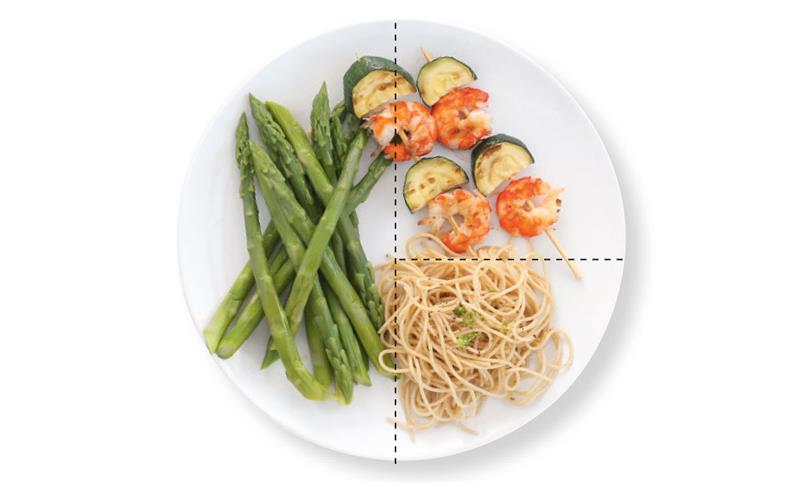LA MITAD DEL PLATO: VEGETALES
Llena la mitad del plato de verduras y hortalizas y, al menos, en una de las comidas del día que estas sean crudas, aunque puedes combinar también la verdura cruda y la cocida en una misma comida. Esto equivale también a un tazón de crema o sopa de verduras. Escoge los vegetales de todos los colores y limita el aceite que añades (máximo 3 cucharadas al día).
UN CUARTO DEL PLATO: PROTEÍNAS MÁS LIGERAS
Pollo, pavo, pescado, huevos, legumbres, tofu… Limita la carne roja, y evita las procesadas como los embutidos. La ración es lo que equivaldría a la palma de la mano, o al puño cerrado.
OTRO CUARTO DEL PLATO: CEREALES, MEJOR INTEGRALES
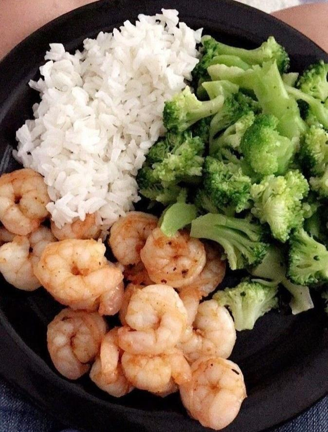Trigo, quinoa, avena, arroz… Esto equivaldría a un par de rebanadas de pan integral, una patata del tamaño de un huevo, y a media taza de arroz, pasta o cereal.
POSTRE Y BEBIDAS
De postre, una pieza de fruta o un yogur. Y para beber, agua, té, café o infusiones. Y si tomas leche, un vaso al día.
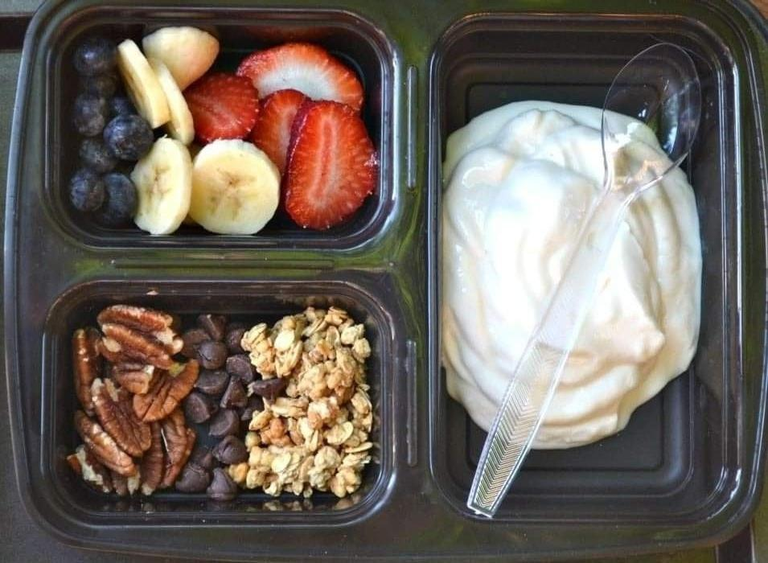PARA DESAYUNAR
Combina un lácteo por el aporte de calcio; hidratos de carbono, como pan y cereales sin azucarar (avena, por ejemplo); proteínas (huevo, queso, yogur, atún…) y fruta.
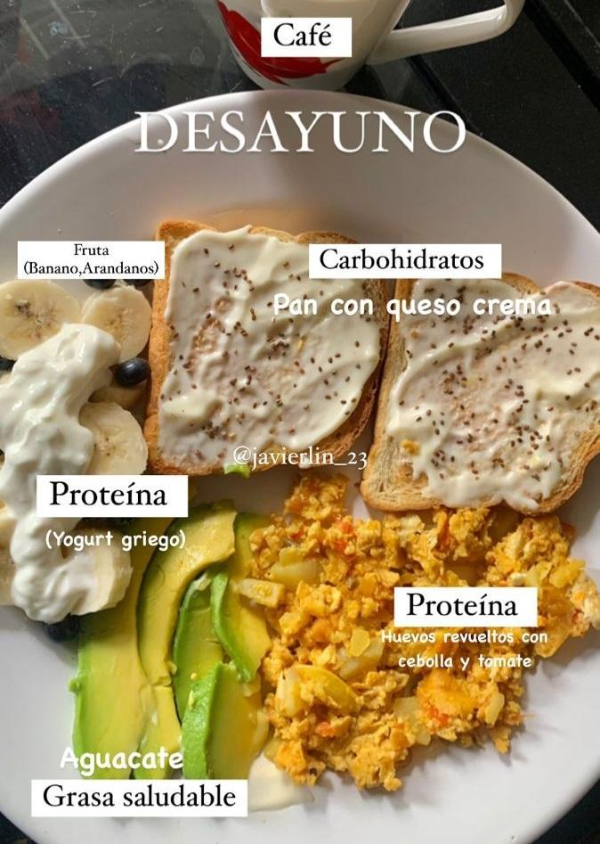 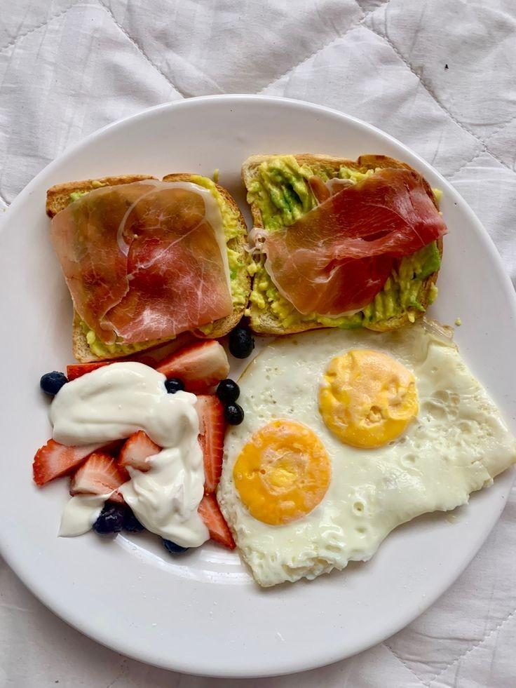 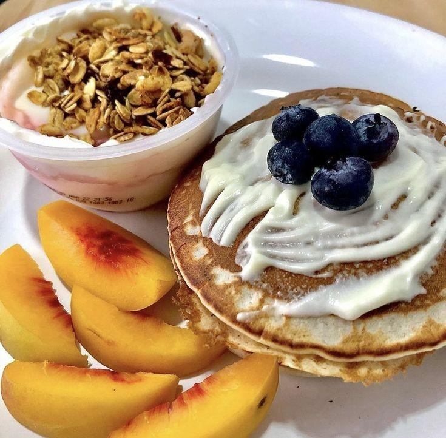MEDIA MAÑANA Y MERIENDA
Son buenos momentos para incluir un aporte de grasas saludables en forma de frutos secos. También puedes optar por un yogur con fruta o por fruta con una onza de chocolate negro.
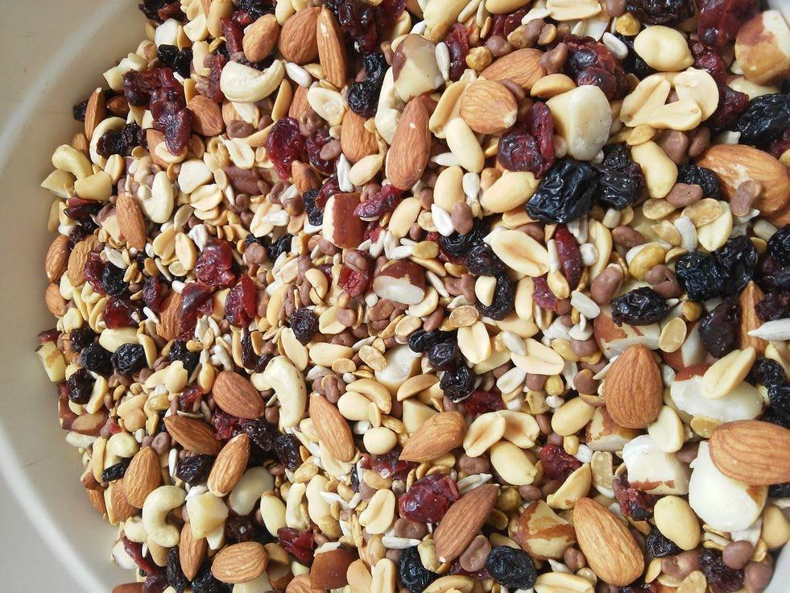 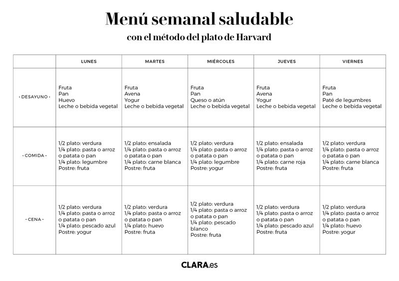Todos los años aparecen dietas nuevas, pero no todas son recomendables. En general, para que una dieta sea efectiva para perder peso, pero también sea segura, no puede ser demasiado estricta. Pero, además, debe adaptarse algo a nuestros gustos, pues si no será muy sencillo que pasemos de ella y acabemos comiendo más de la cuenta.
pero estas tres cuentan con el respaldo de prestigiosas instituciones y científicos y con un nutrido grupo de personas que las han realizado con éxito.
1. La dieta de la clínica Mayo
La clínica Mayo es una de las compañías de hospitales privados más prestigiosas del mundo, muy conocida por su potente labor de investigación. Los nutricionistas de la institución elaboraron una dieta estandarizada que recomiendan a los pacientes para perder peso, pero también para mantener una alimentación saludable a lo largo del tiempo.
Desayuno
Un yogur desnatado y una pieza de fruta.
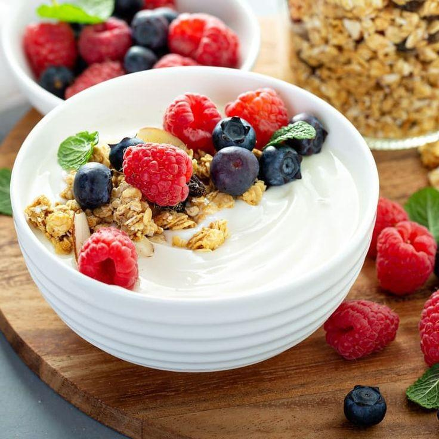1/2 taza de avena cocida con una de leche y dos cucharadas de pasas, 1/4 de mango y una bebida sin calorías.
Comida
Una ensalada de pasta elaborada con una lata de atún, cuatro tazas de pasta cocida, dos tazas de zanahoria y calabacín en dados y cuatro cucharadas de mayonesa baja en calorías y una naranja.
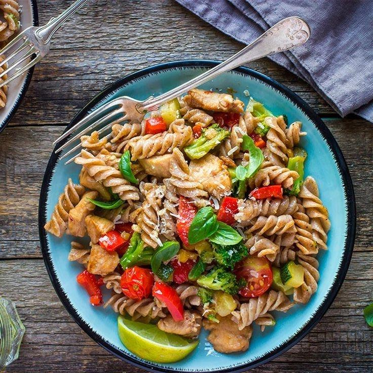Pasteles de quinoa y batata, ensalada mixta con aderezo sin grasa y una bebida sin calorías.
Cena
Un tercio de una pizza de queso de 12 pulgadas.
Una ensalada verde elaborada con media taza de tomate en rodajas, cebolla roja y champiñones. Y dos cucharadas de aliño.
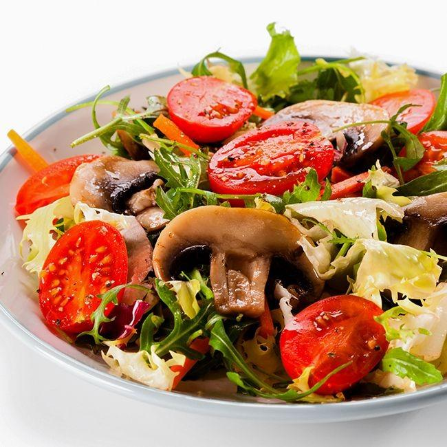1 pizza de pan árabe, 3/4 de taza de frutas mezcladas y una bebida sin calorías
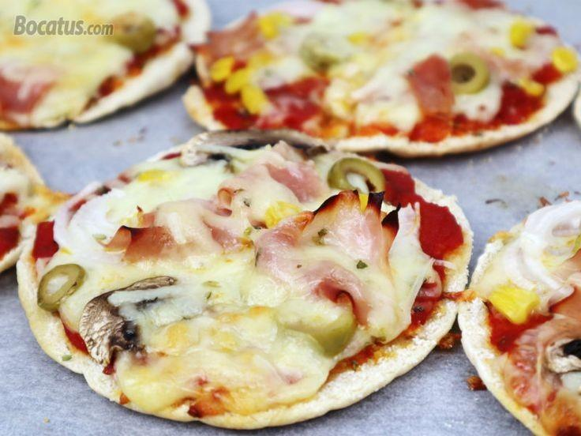2. La dieta mediterránea
La dieta mediterránea es la dieta tradicional que cuenta con un mayor respaldo científico y todos conocemos en qué consiste: un consumo alto de frutas, verduras, pescado, cereales integrales, legumbres y aceite de oliva, y bajo en carne roja, azúcares y grasas saturadas.
Desayuno
-Un café con leche.
-Una rebanada de pan con aceite de oliva.
-Un vaso de zumo de naranja natural.
Aperitivo
-Una pieza de fruta.
Comida
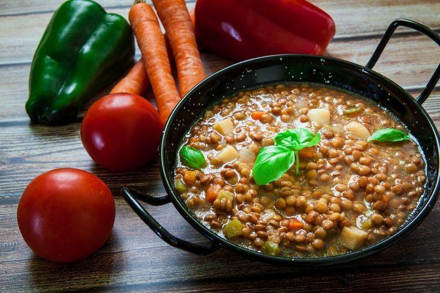-Lentejas guisadas.
-Albóndigas con guisantes y zanahoria.
-Fresas con nata.
Merienda
-Queso fresco con miel.
Cena
-Ensalada mixta.
-Pescado al horno con patata asada.
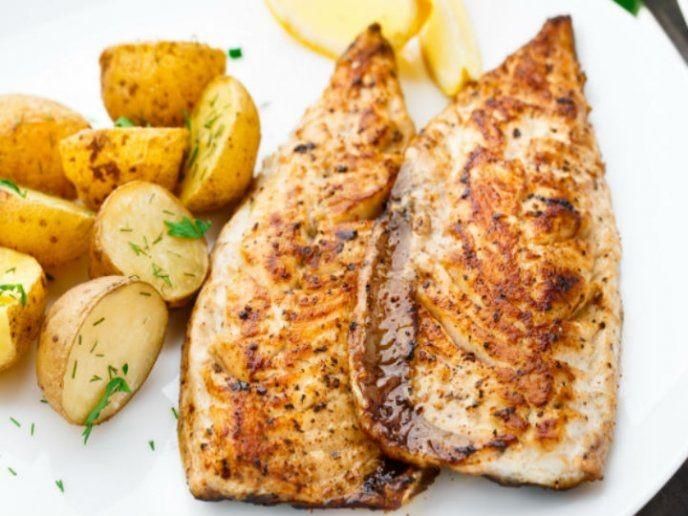-Un yogurt.
3.La dieta DASH
La dieta DASH responde al acrónimo 'Dietary Approaches to Stop Hypertension' (“enfoque alimenticio para detener la hipertensión”) y, como su nombre indica, fue desarrollada por el Instituto Nacional de Salud estadounidense como una dieta específica para tratar a pacientes con tensión alta. Aunque no nació como una dieta de adelgazamiento, sí que sirve para tal fin.
Desayuno
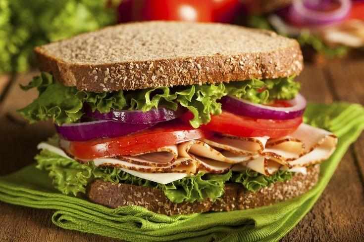-Sándwich integral de pavo y tomate.
-Una naranja.
-Un té verde.
Aperitivo
-Piña.
Comida

-Lomo de cerdo asado con arroz integral y frijoles.
-Una ensalada de lechuga.
Merienda
-Palitos de zanahoria
Cena
-Pasta con tomate natural y mejillones.
-Gelatina sin azúcar.
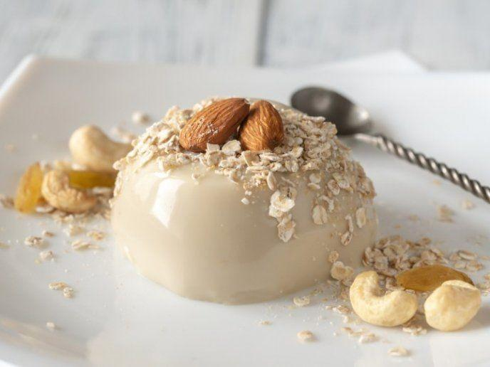-Batido natural de leche semi desnatada o yogur líquido con un plátano.
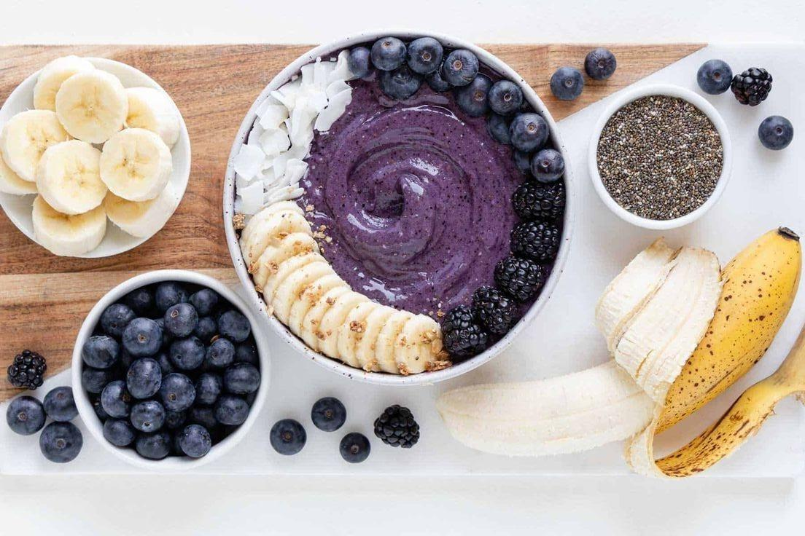DERECHOS DE AUTOR
Páginas donde fue sacada la información, textos, inspiración: